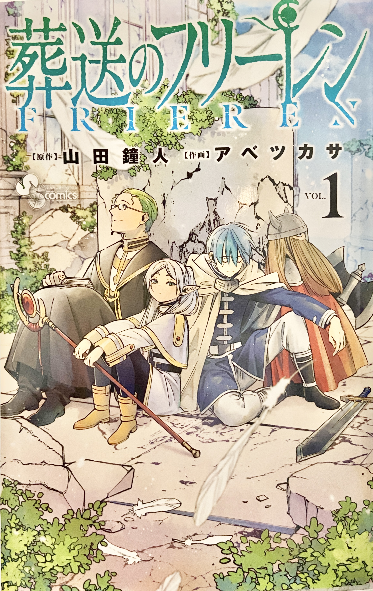

大学生になってから、アニメをきっかけに知った作品です。
ファンタジーな世界での冒険物語で、人との出会いや別れ、生きる意味について考えさせられます。
主人公は、長い寿命を持つエルフの魔法使い・フリーレン。
永い時を生きる彼女の視点を通して描かれる人間との関わりは、どこか切なく、儚い余韻を残します。
ゆったりとした時間の流れと静かな世界観に引き込まれ、読んでいる間は現実を忘れて物語に没入することができます。
現在は休載中のため、物語の再開がとても待ち遠しいです。
原作：山田鐘人 作画：アベツカサ
出版社：小学館 出版年：2020年

大学生になってから、アニメをきっかけに知った作品です。
ファンタジーな世界での冒険物語で、人との出会いや別れ、生きる意味について考えさせられます。
主人公は、長い寿命を持つエルフの魔法使い・フリーレン。
永い時を生きる彼女の視点を通して描かれる人間との関わりは、どこか切なく、儚い余韻を残します。
ゆったりとした時間の流れと静かな世界観に引き込まれ、読んでいる間は現実を忘れて物語に没入することができます。
現在は休載中のため、物語の再開がとても待ち遠しいです。